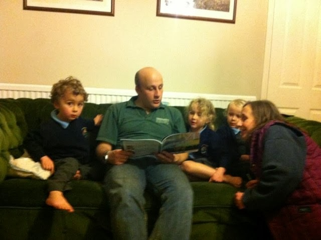
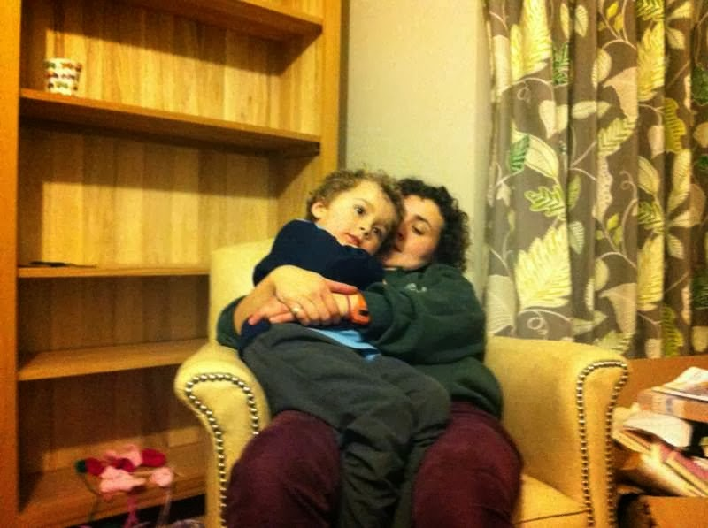
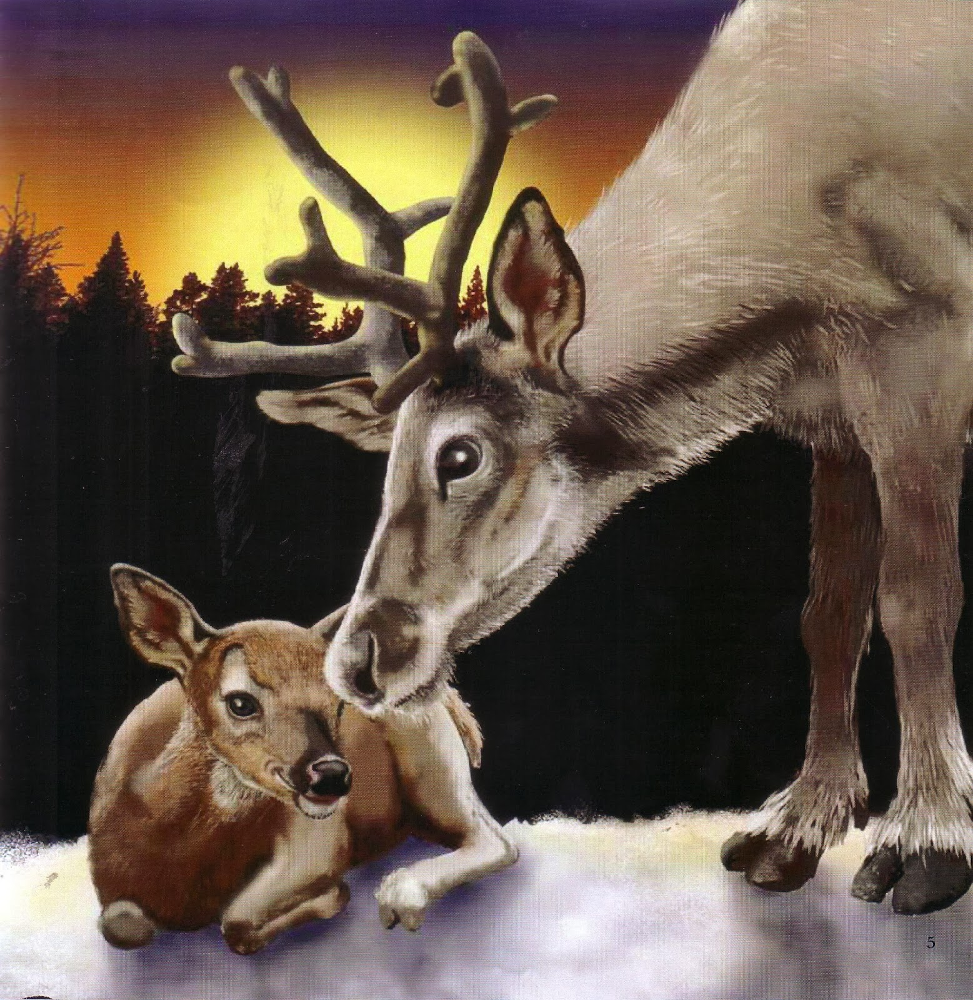
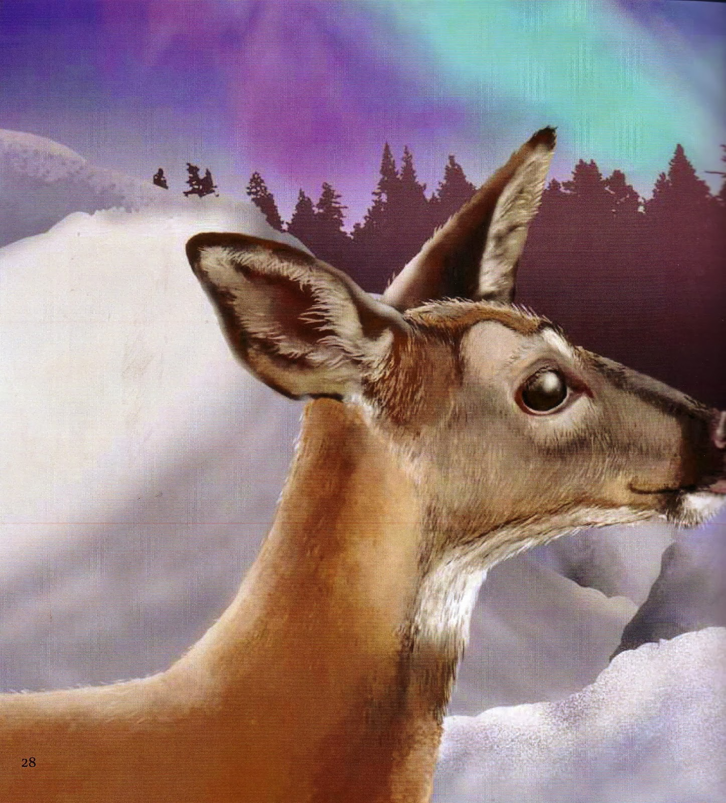
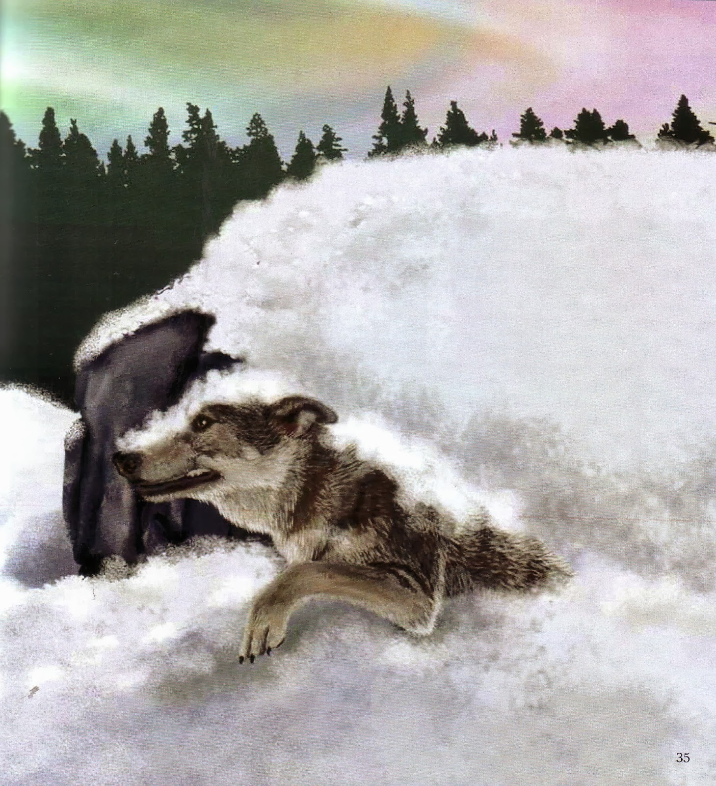
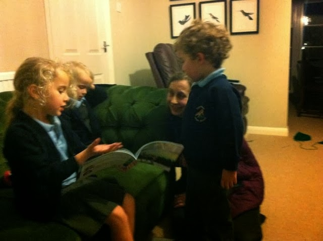

{kind=link}
A dull evening in early February. All
of us have been working, most of us are recovering from a fluey cold. We settle down with a
box of chocolates and a new book: Suvi and the Sky Folk by
Sandra Horn and Muza Ulasowski. “It looks good,” says my 4 year old grandson, Kemmel, judging a book by its cover. He's right, it's an effective, inviting cover –
unusual colouring, those yellowy greens and the dash of violet. The
lettering manages to be perfectly clear and yet also to blend into
the flickering, transient lights. The contrast of the dark forest
and the powdery snow is stark and there is a baby deer, alone, its shadow disappearing beyond the names of author and
illustrator.
What you see is what you get. Suvi and
the Sky Folk is the story of a young reindeer who becomes separated from
her mother and the herd. Her Grand-deer has told her scary stories
of the Sky Folk who live in the dancing lights. If you wave or make a
noise, they will snatch you away to the place when No Moss Grows. It
is the time of the long dark, when yellow-eyes and sharp teeth come
slinking. Suvi is entranced by the ethereal pyrotechnics. She wanders away from the herd …
 |
| Kemmel, Frank, Gwen, Hettie, Julia |
{kind=link}
 |
| Kemmel and Alice, when OMW is about |
{kind=link}
I asked the children to tell me which pictures thay liked the best in this beautifully illustrated story. Kemmel spent a long time deciding and then chose the first page – the beginning of the Long Dark when the mother warns Suvi that “Yellow-eyes and sharp teeth will come slinking.” Gwen liked the moment when Suvi realised she'd had a miraculous escape. But was it miraculous? Alice and I – who had listened to the words , not looked at the pictures – were happy to accept that the Sky People could have intervened to save the little reindeer. Frank laughed at our credulity and Hettie pointed to the picture which provides the rational explanation. Lively discussion ensued ...
 |
| Kemmel's choice the beginning of the Long Dark |
{kind=link}
 |
| Gwen's choice the moment Suvi realises that she's safe |
{kind=link}
 |
| Hetti's choice what really happened to the wolf |
{kind=link}
When we adults were talking afterwards about this
story and other picture books we agreed that children's
perceptions of what is frightening in a story are often quite
different from adults. Alice's mother had queried her reading them Martin Waddell & Patrick Benson's Owl
Babies (a story with some similarities to Suvi) as she felt it was so unsettling. I knew exactly what she meant though I think it might have been me who had given the book. In Owl Babies it it the mother who has left her children in order to go hunting and I'm sure I can't be the only parent who regularly has nightmares about not being able to get home to her family. The children waiting in Owl Babies feel that their mother has been so long away -- they trust her of course but ... it has been a very long time. It's a beautifully judged book and the reassurance when mother comes gliding home is delicious.
The adult herd has been hunting for little Suvi while she has been having her lonely, dangerous adventure. I'm glad we don't enter into their anxieties -- the panic of a community with a missing child. I think that might be too much. The final reassurance is tactile -- warm coats and nuzzling noses and once Suvi is snuggled back close to her mother she's not too worried whether the Sky Folk are fact or fiction. I liked the sense of something unresolved. There was lots to talk about in Suvi -- the aurora borealis, owls and lemmings in the arctic and whether or not Grand-deer's story had any truth in it. There had been plenty to look at as well and we sang the praises of clarity in children's book illustration as well as drama, humour and detail.
 |
| Gwen explaining her point of view |
{kind=link}
When I was back at home with my partner Francis and our youngest son (now 17) we began to amuse ourselves by naming the picture books that would contend for a place in our personal top ten. The Very Hungry Caterpillar, Each Peach Pear Plum, The Cat in the Hat, I'm Going on a Bear Hunt, Isobel's Noisy Tummy, The Tiger Who Came to Tea, Mr Magnolia, Not Now Bernard, Hairy McLarey, The Enormous Crocodile, Only Joking Laughed the Lobster. Already we reach 11 and that's without allowing more than a single entry to Dr Seuss and not considering all-time greats such as Peter Rabbit and Babar. The single quality we felt that they had in common was their capacity to breed ear-worms: simple, memorable, repeated phrases that are SHARED at the time and stick in the mind for decades. That's such an impressive achievement. Picture-book writers & illustrators, I salute you. Sandra Horn and Muza Ulasowski I thank you for adding luminous colour and a haunting story to a wet mid-week evening. Long live shared family reading.
Note from Sue Price - 'cos I won't be able to comment today. Love this post! - And my vote goes to 'In The Night Kitchens' by Sendak. - 'Milk! Milk! Milk for the morning cake!'
Note from Sue Price - 'cos I won't be able to comment today. Love this post! - And my vote goes to 'In The Night Kitchens' by Sendak. - 'Milk! Milk! Milk for the morning cake!'